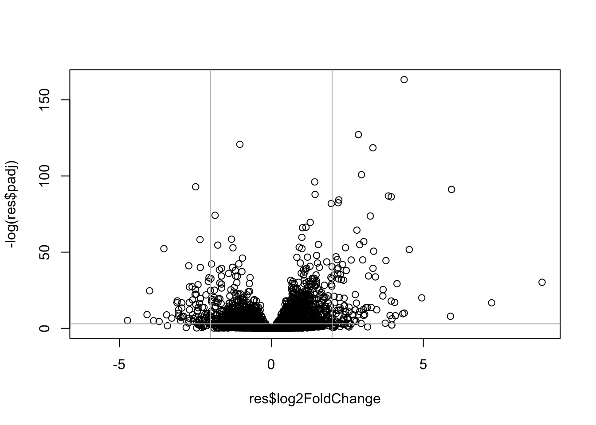
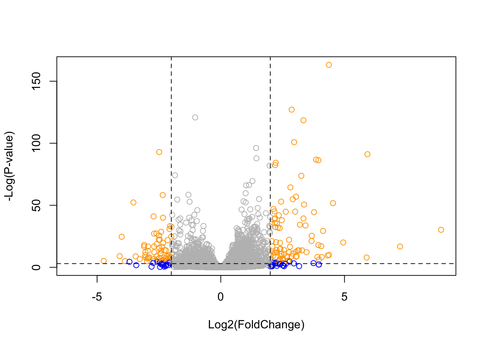

#install.packages("BiocManager")
#BiocManager::install()Class 13: RNASeq
Importing Necessary Packages
First, we’ll have to install the “bio conductor” package
Next, we’ll install the DESeq2 data set within the BiocManager package
#BiocManager::install("DESeq2")library("DESeq2")Class Background
The data for today’s lab comes from a published RNA-Seq experiment where airway smooth muscle cells were treated with dexamethasone, a synthetic glucocorticoid steroid with anti-inflammatory effects.
Import Data
We need two things for this analysis: counts and metadata - called “countData” & “colData” in the DESeq2 world.
counts = read.csv("airway_scaledcounts.csv", row.names=1)
metadata = read.csv("airway_metadata.csv")Examine Data
Q1. How many genes are in this dataset?
nrow(counts)[1] 38694We can see that there are 38694 genes in the dataset.
Q2. How many ‘control’ cell lines do we have?
table(metadata$dex)
control treated
4 4 #Or
sum(metadata$dex=="control")[1] 4There are 4 control cell lines included in the metadata.
Check to ensure that the metadata & coldata match in their orders:
In order for our later analysis to work, we have to make sure that the column names in our first dataset are in the exact same order as the rows in our second data set:
all(colnames(counts) == metadata$id)[1] TRUE#Note: all(c(T,T,T)) = TRUE but all(c(T,T,F)) = FALSE ; only true is all values are trueSince all the returned values are true, our ordering is correct and we may proceed.
Analysis
Next, we want to compare the cases where cells received drugs vs control groups (i.e. the “control” vs “treated” columns). We can begin our analysis by finding the average expression for each gene among each of the 4 control/treated columns.
Let’s extract all the “control” columns first from the metadata dataset:
control.inds = metadata$dex=="control"
control.counts = counts[,control.inds]
head(control.counts) SRR1039508 SRR1039512 SRR1039516 SRR1039520
ENSG00000000003 723 904 1170 806
ENSG00000000005 0 0 0 0
ENSG00000000419 467 616 582 417
ENSG00000000457 347 364 318 330
ENSG00000000460 96 73 118 102
ENSG00000000938 0 1 2 0Q3. How would you make the above code in either approach more robust? Is there a function that could help here?
Now we can calculate the mean expression for each gene in the control groups using an apply() operation:
head(apply(control.counts,1,mean))ENSG00000000003 ENSG00000000005 ENSG00000000419 ENSG00000000457 ENSG00000000460
900.75 0.00 520.50 339.75 97.25
ENSG00000000938
0.75 #Note: we use "1" here since we're trying to average the expression of each gene across each of the 4 control experiments
# We're using "head" here to avoid showing all 38,000 genesQ4. Follow the same procedure for the treated samples (i.e. calculate the mean per gene across drug treated samples and assign to a labeled vector called treated.mean)
Now we can do the same to calculate the mean expression per gene among the “treated” group:
treated.inds = metadata$dex=="treated"
treated.counts = counts[,treated.inds]
head(apply(treated.counts,1,mean))ENSG00000000003 ENSG00000000005 ENSG00000000419 ENSG00000000457 ENSG00000000460
658.00 0.00 546.00 316.50 78.75
ENSG00000000938
0.00 Now that we’ve averaged the expression of each gene in the control vs. treated groups, we can go on to compare the expression of genes between groups to see if the drug treatment impacted the expression of certain genes:
Here, we’ll create a new data frame with the mean gene expression counts from each group:
#assigning the mean expression to a new variable for control vs mean
control.mean = apply(control.counts,1,mean)
treated.mean = apply(treated.counts,1,mean)
#creating a new data frame with the mean treated vs control data:
meancounts = data.frame(control.mean, treated.mean)
head(meancounts) control.mean treated.mean
ENSG00000000003 900.75 658.00
ENSG00000000005 0.00 0.00
ENSG00000000419 520.50 546.00
ENSG00000000457 339.75 316.50
ENSG00000000460 97.25 78.75
ENSG00000000938 0.75 0.00Q5 (a). Create a scatter plot showing the mean of the treated samples against the mean of the control samples.
Now, we can make a plot to compare the control vs. mean expression data. If the drug did nothing, then we should observe all genes along a straight, diagonal line:
#plot(meancounts$control.mean, meancounts$treated) or simply...
plot(meancounts)
From this initial plot, we can see that certain genes fall above/below the line. Genes that are above the diagonal have their expression upregulated by the drug treatment while genes below the line decrease in expression upon treatment.
Q5 (b).You could also use the ggplot2 package to make this figure producing the plot below. What geom_?() function would you use for this plot?
If we were to use ggplot, then we would want to use a geom_point function.
Q6. Try plotting both axes on a log scale. What is the argument to plot() that allows you to do this?
Since it looks like most of the data is clustered in the bottom left of the plot, we should rescale the axis using a log function, specifically, log=“xy”.
plot(meancounts, log="xy")Warning in xy.coords(x, y, xlabel, ylabel, log): 15032 x values <= 0 omitted
from logarithmic plotWarning in xy.coords(x, y, xlabel, ylabel, log): 15281 y values <= 0 omitted
from logarithmic plot
Now we can better see the spread of genes along the diagonal. There is more spread/variety of expression towards the bottom left of the graph (genes which are expressed at lower levels tend to have more variety upon being treated with the drug).
We often use log2 units to further analyze this kind of data since it helps us assign values to describe the deviation of each gene’s expression from the diagnoal (i.e. no change).
log2(10/10)[1] 0#This is the same as saying log2(1) which equals 0; in this, case, any item in our graph that falls along the exact diagonal (ex. 10/10) will be equal to 0 once we run it through a log
log2(20/10)[1] 1#if one variable is 2x as much as the other, then the return is 1
log2(10/20)[1] -1#if one variable is 1/2x as much as the other, then the return is -1
log2(40/10)[1] 2#if expression is quadrupled upon treatment, then the return is 2Let’s create a column in a new data frame which includes the log2 of the y/x data (treated/control)
meancounts$log2fc <- log2(meancounts[,"treated.mean"]/meancounts[,"control.mean"])
head(meancounts) control.mean treated.mean log2fc
ENSG00000000003 900.75 658.00 -0.45303916
ENSG00000000005 0.00 0.00 NaN
ENSG00000000419 520.50 546.00 0.06900279
ENSG00000000457 339.75 316.50 -0.10226805
ENSG00000000460 97.25 78.75 -0.30441833
ENSG00000000938 0.75 0.00 -InfNegative values are downregulated genes upon treatement, positive values are upregulated. Typically, we care about log2 values which are more extreme than +2 or -2 (quadrupling effect on gene expression from the drug).
The NaN values arise from instances where we divide by 0. -Inf values arise from trying to take the log of 0. We should remove these values from our data set in order to continue our numerical analysis.
zero.vals = which(meancounts[,1:2]==0, arr.ind=TRUE)
# or to.keep.inds = (rowSums(meancounts[,1:2]==0)==0)
# mycounts = meancounts[to.keep.inds]
to.rm = unique(zero.vals[,1])
mycounts = meancounts[-to.rm,]
#removes instances of to.rm in our meancounts data
head(mycounts) control.mean treated.mean log2fc
ENSG00000000003 900.75 658.00 -0.45303916
ENSG00000000419 520.50 546.00 0.06900279
ENSG00000000457 339.75 316.50 -0.10226805
ENSG00000000460 97.25 78.75 -0.30441833
ENSG00000000971 5219.00 6687.50 0.35769358
ENSG00000001036 2327.00 1785.75 -0.38194109#modified mycounts to not have NaN and -Inf valuesQ7. What is the purpose of the arr.ind argument in the which() function call above?
In the function call above, “arr.ind==TRUE” in the which() statement serves to return data points where it is “TRUE” that the first two columns contain a “0”.
nrow(mycounts)[1] 21817After filtering out the 0 values, we have 21817 genes left.
Before, we stated that a log2 value of +2 or -2 serves as a threshold to consider it “up” or “down” regulated.
sum(mycounts$log2fc>=2)[1] 314sum(mycounts$log2fc<=-2)[1] 485Q8. Using the up.ind vector above can you determine how many up regulated genes we have at the greater than 2 fc level?
We didn’t end up using the up.ind vector, but we did discover that that 314 genes were upregulated enough to produce a log2 value of 2 or greater.
Q9. Using the down.ind vector above can you determine how many down regulated genes we have at the greater than 2 fc level?
Again, we didn’t end up using the down.ind vector, but we did discover that that 485 genes were downregulated enough to produce a log2 value of -2 or lower
Q10. Do you trust these results? Why or why not?
Still, we’re missing a statistical analysis which indicates that the variance we’re seeing isn’t due to just natural variation among the 4 experiments that we started with (for each control/treated group); we need something like a standard deviation. To do this statistical analysis, we’ll use DESeq:
library(DESeq2)To use DESeq, we have to get our input data in a very particular format
dds = DESeqDataSetFromMatrix(countData = counts,
colData = metadata,
design = ~dex) #design is the dex column; control vs treatedconverting counts to integer modeWarning in DESeqDataSet(se, design = design, ignoreRank): some variables in
design formula are characters, converting to factorsdds class: DESeqDataSet
dim: 38694 8
metadata(1): version
assays(1): counts
rownames(38694): ENSG00000000003 ENSG00000000005 ... ENSG00000283120
ENSG00000283123
rowData names(0):
colnames(8): SRR1039508 SRR1039509 ... SRR1039520 SRR1039521
colData names(4): id dex celltype geo_idNow, we’ll run DESeq:
dds = DESeq(dds)estimating size factorsestimating dispersionsgene-wise dispersion estimatesmean-dispersion relationshipfinal dispersion estimatesfitting model and testingres = results(dds)
head(res)log2 fold change (MLE): dex treated vs control
Wald test p-value: dex treated vs control
DataFrame with 6 rows and 6 columns
baseMean log2FoldChange lfcSE stat pvalue
<numeric> <numeric> <numeric> <numeric> <numeric>
ENSG00000000003 747.194195 -0.3507030 0.168246 -2.084470 0.0371175
ENSG00000000005 0.000000 NA NA NA NA
ENSG00000000419 520.134160 0.2061078 0.101059 2.039475 0.0414026
ENSG00000000457 322.664844 0.0245269 0.145145 0.168982 0.8658106
ENSG00000000460 87.682625 -0.1471420 0.257007 -0.572521 0.5669691
ENSG00000000938 0.319167 -1.7322890 3.493601 -0.495846 0.6200029
padj
<numeric>
ENSG00000000003 0.163035
ENSG00000000005 NA
ENSG00000000419 0.176032
ENSG00000000457 0.961694
ENSG00000000460 0.815849
ENSG00000000938 NARunning this analysis yields p-values for the expression of each gene. Typically, we use a threshold of 0.05 for a statistically significant p-value. Additionally, we have an adjusted pvalue (padj) output which accounts for the size of the dataset (thousands of genes).
To end off for today, let’s make a figure showing an overview of all the results we’ve obtained (a plot of log2 fold change vs. the adjusted p-value)
plot(res$log2FoldChange, res$padj)
In the resulting plot, we don’t care about values which are high on the x-axis (large p-value, insignificant statistically).
Now, we can take the log of the y-axis and invert the graph so that points near the top of the graph are significant. (left side = significantly downregulated, right side = significantly upregulated). We’ve also gone ahead and drawn thresholds at log2 values of +2 and -2 as well as a horizontal line at a p-value of 0.05 (we have to apply the -log function to the p-value to draw the line in the correct position).
plot(res$log2FoldChange, -log(res$padj))
abline(v=-2, col="gray")
abline(v=2, col="gray")
abline(h=-log(0.05), col="grey")
Genes located in the top left and top right of the plots are the significantly up-regulated/down-regulated genes that we care about.
mycols = rep("gray", nrow(res))
mycols[ abs(res$log2FoldChange) > 2 ] = "blue"
inds <- (res$padj < 0.01) & (abs(res$log2FoldChange) > 2 )
mycols[ inds ] = "orange"
plot( res$log2FoldChange, -log(res$padj),
col=mycols, ylab="-Log(P-value)", xlab="Log2(FoldChange)" )
abline(v=c(-2,2), col="black", lty=2)
abline(h=-log(0.05), col="black", lty=2)